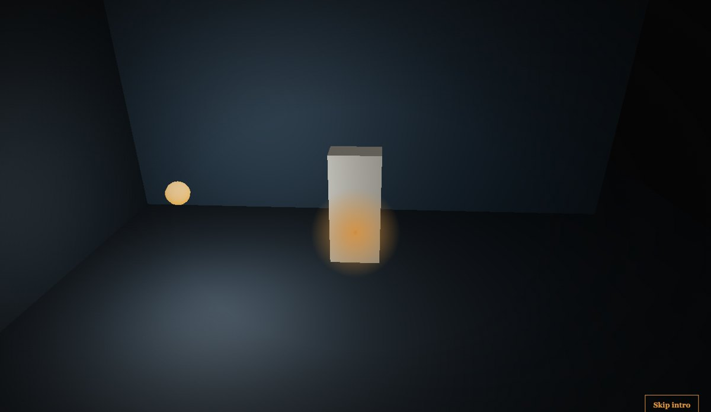
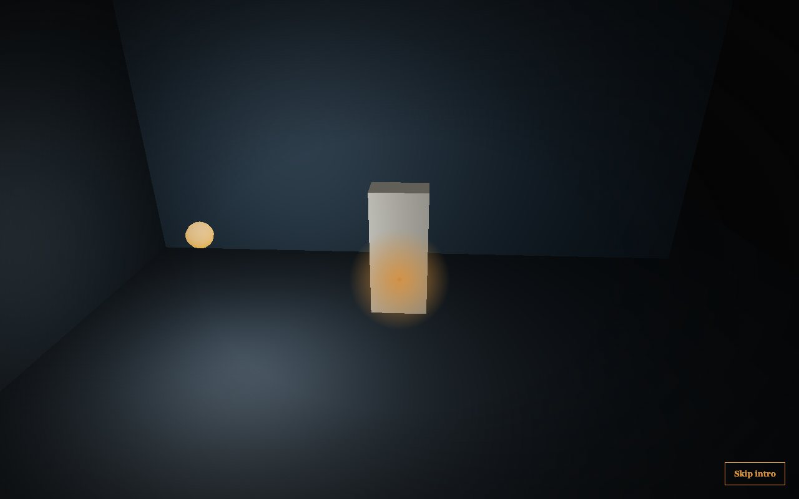
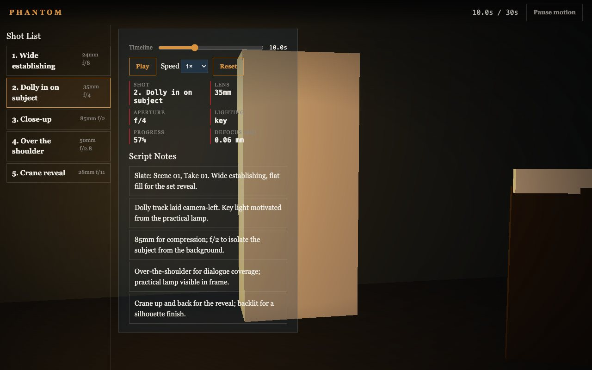

Blender · three.js · motion design · 2026-10
What Does a Lens Change Actually Cost a Camera Move?
A virtual film production and previsualization studio: a five-shot sequence where the camera's field of view, dolly path and practical lighting all read from one timeline value, with real depth-of-field math (not a label) behind every lens and aperture choice.

Built from blueprint 04 of a written build book (Advanced Engineering Build Book, Volume VIII) as one vertical slice, using the five-tool-design-pipeline skill: an Awesome Design file for type/spacing scale (this one chose a serif pairing, deliberately unlike every other blueprint in the volume so far), the Taste/Impeccable checklist, Playwright including a rendered-pixel-color check (the lesson from blueprint 03), Three.js as the product. Everything is synthetic: the 5-shot list and script notes come from a deterministic generator. Not built: true post-process depth-of-field blur (modeled numerically, shown as a HUD readout, not rendered), FFmpeg server-side export, auth.
01 — The problem
The book's rule for this blueprint is that each chapter has to behave like a shot, not a content section, and the interface should make the user feel like a cinematographer rather than a dashboard user. That means the camera's lens and aperture have to matter, not just a caption saying '85mm'.
02 — What I built
One repository with the whole pipeline.
- A scripted asset:
model/build.pybuilds a clapperboard slate and a camera dolly rig, exports GLBs, renders a poster. - A domain model: a shot list with a camera path and lens/aperture per shot, a timeline-lookup function, and real (simplified thin-lens) circle-of-confusion math, all pure and unit-tested.
- A browser runtime where a single timeline value drives camera position (smoothstep interpolation within the active shot), field of view (derived from the shot's lens focal length, not a fixed camera), and the practical light's color (from the shot's lighting cue).
- An intro: a countdown leader that flares into a practical light, pulls back to reveal the dolly rig, and hands off through a light mask centered on the slate.
- Fallbacks: poster for no WebGL, static keyframes for reduced motion.
03 — How it was built
- 01
A lens that actually changes the frame
Field of view is derived live from each shot's focal length (
2*atan(24/(2*lensMm)), a 24mm-sensor-height approximation), lerped toward the active shot's value every frame. Switching from the 24mm establishing shot to the 85mm close-up visibly narrows the frame; it isn't a label next to an unchanged camera.const fovFromLens = (lensMm) => THREE.MathUtils.radToDeg(2 * Math.atan(24 / (2 * lensMm))); camera.fov = THREE.MathUtils.lerp(camera.fov, fovFromLens(shot.lensMm), k); - 02
Depth of field, modeled honestly as a number, not faked as a blur
A full screen-space depth-of-field post-process was out of this slice's performance budget, so the circle-of-confusion diameter is computed with a real (simplified) thin-lens formula and shown as a HUD readout in millimeters, rather than faking a blur shader that would not correspond to the actual numbers. Documented as a deliberate simplification, not silently skipped.
- 03
Learning from the last blueprint
Blueprint 03 found that a feature whose whole point is a visual change needs an e2e test that samples rendered pixels, not just a DOM readout. This blueprint's camera-movement test does exactly that: it screenshots a 2x2 pixel clip before and after a shot change and asserts the bytes differ.
04 — Results
The set in darkness, before the pull-back:

Shot 2, dolly in:

Checks. 12 unit and API tests, 17 Playwright tests including a rendered-pixel-color camera-movement check, clean typecheck.
Performance, SwiftShader (no GPU claim). 8 draw calls, 134 triangles; 565 KB gzipped JS; 3.8 KB and 11.3 KB of GLB. Median 16.7 ms per frame.
05 — What I'd do next
- Measure on a physical GPU and a mid-range phone.
- Add a real screen-space depth-of-field post-process now that the circle-of-confusion math is already correct.
- Add match-cut and wipe transition styles between shots instead of the current continuous lerp, per the book's cinema-grammar requirement.